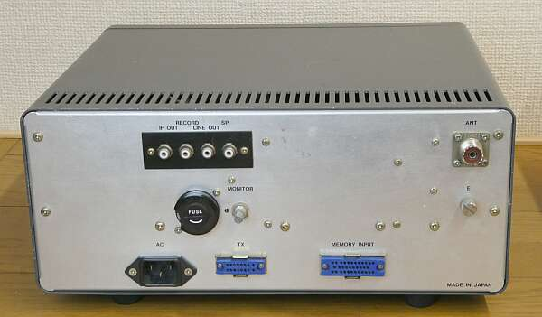
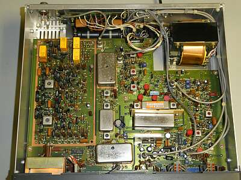
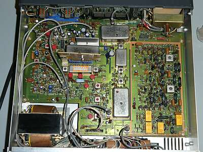
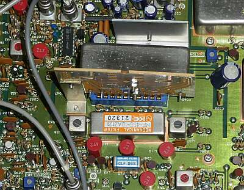
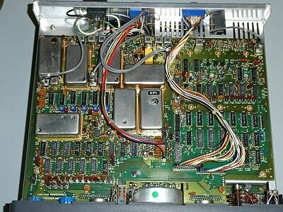
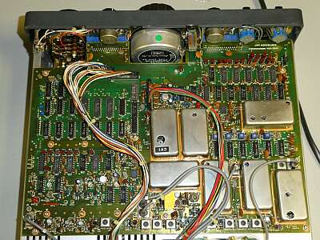

送信機 ＮＳＤ-５１５、ＮＢＤ-５１５と並べて見ました
 |
|
 |
リア・パネルです
送信機 ＮＳＤ-５１５との接続は、角型コネクタ・ケーブル1本とアンテナケーブルのみ
互いのＶＦＯが、ボタン一つで選択できます |
|
 |
シャーシ上面をフロント・パネル側から
いわば、こちらの基板がアナログ処理部、いわゆる受信信号が流れる（処理される）基板です |
 |
シャーシ上面
リア・パネル側から写しています
これまでの受信機にあった高周波部の同調機構はありません
６バンドに分割されたＬＰＦ、ＢＰＦによって、目的を達成してあります
６００ＫＨｚ ＬＰＦ
ＢＣ帯は、ＢＣチューンという方式が採用されています（ＢＦＯツマミと兼用）
そこから上は、５バンド分割のＢＰＦの採用です |
 |
フィルタ部のアップです
メイン基板に取り付ているのが標準装備の
・６KHｚセラミック・フィルタ
・２.４ＭＨｚメカニカル・フィルタ
ドーター・ボードに取り付いているのが、
オプションの３００Ｈｚクリスタル・フィルタです
６００Ｈｚメカニカル・フィルタは、３００Ｈｚクリスタル・フィルタの上に取り付けるようになっています
フロント・パネル操作/帯域セレクトＳＷでは、３００Ｈｚクリスタル・フィルタは、ＡＵＸの位置です |
 |
シャーシ底面をフロント側から
こちらは、コンバート用に必要な信号を作る、デジタル処理中心の部分です |
 |
シャーシ裏面をリア側から
フロント・パネル裏中央に見えるのは、デジタルＶＦＯのためのロータリー・エンコーダです |
|
４０年を超える選手です
ロータリーSWの接触不良や、押しボタンSWでは機構の劣化というか油切れというか、スムーズにON-OFFできない状況が起きていましたので、手入れしました
電気的な問題は、ありませんでした
メカニカル・フィルタも元気です
電気的性能も、カタログデータを十分クリアします
実際の受信にあっては、その昔の真空管式受信機を彷彿させるような落ち着いた受信フィーリングです
ノイズも少なく聞こえます
メイン・ダイヤルは、１００Ｈｚステップで、あとの微調はΔＦツマミで対応するしかありません
ＡＧＣをＯＦＦにしても、結構な強力信号でも無事に？復調できます
検波入力レベルには余裕があるようで、好感？が持てます
狭帯域フィルタを使うと、受信信号レベルが下がるなどよく見受けますが、本機では全くそのようなことはありません
この場合ですが、可変のＢＦＯは必須で、有難みを強く感じます |